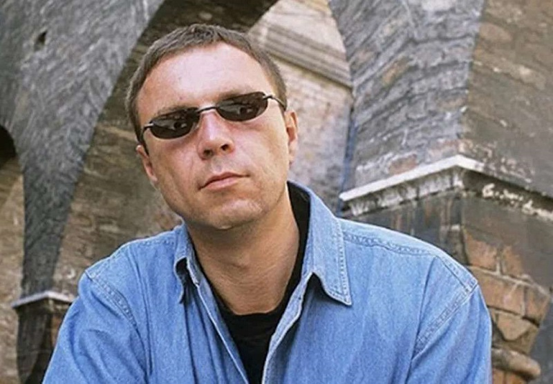
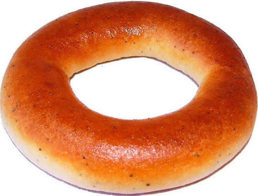
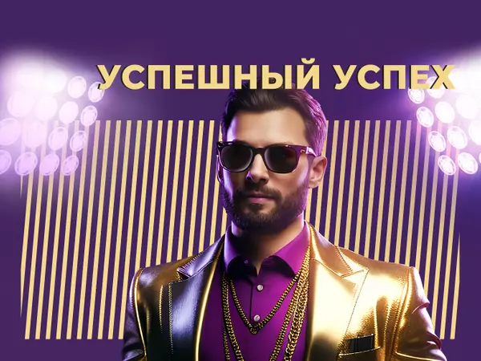
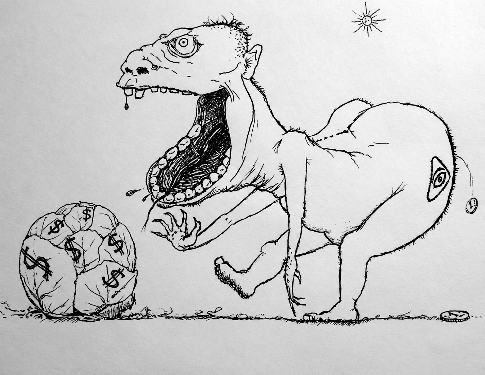
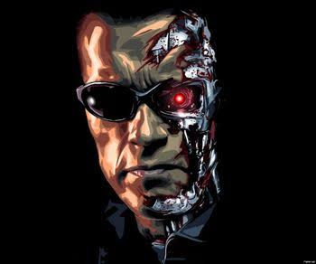

Центральное понятие философии Пелевина – пустота. Это не «ничто» в западном смысле, а живая, порождающая основа бытия. В романе «Чапаев и Пустота» главный герой носит говорящую фамилию:
— Ты можешь мне сказать, кто ты?
— Петр Пустота.
— Это твое имя. А кто тот, кто это имя носит?
Чапаев в романе выступает как дзен-мастер, который разрушает иллюзию «я». Пелевин утверждает, что то, что мы называем личностью, – это набор привычек, страхов и слов, заимствованных у других. За этим набором нет чего-то «настоящего» – только пустота, которая, однако, не является чем-то ужасным. Напротив, осознание пустоты – это освобождение.

Пелевин одним из первых в русской литературе осмыслил постмодернистскую концепцию симулякра применительно к российской реальности. В «Generation „П“» он описывает мир, где реклама стала новой религией, а потребитель — её верующим. Главный герой Вавилен Татарский создаёт рекламные образы, которые начинают жить собственной жизнью и подчинять себе людей.
«Главная задача рекламы – это показывать людям других людей, которые сумели обмануться и найти счастье в обладании материальными объектами. На самом деле такие обманувшиеся живут только в клипах».
Пелевин показывает: в мире симулякров нет оригинала. Нет «настоящей» России, «настоящей» духовности, «настоящего» Запада. Есть только копии копий, которые мы принимаем за реальность. Телевизор, реклама, политические лозунги — всё это создаёт гиперреальность, в которой человек живёт, не замечая, что стены декорации.

Пелевин жёстко критикует общество потребления, но не с морализаторской позиции, а с буддийской. Желание – источник страдания. А современный капитализм превратил желание в бесконечный конвейер: ты хочешь, получаешь, разочаровываешься, хочешь снова. Это сансара — колесо страданий, крутящееся со скоростью рекламного ролика.
В «Empire V» эта мысль достигает буквального воплощения. Вампиры – метафора системы, где само желание стало валютой. Главный герой Роман проходит путь от обычного потребителя до вампира – и обнаруживает, что мир устроен как многоуровневая воронка: одни пьют кровь, другие пьют «баблос», третьи потребляют иллюзию свободы. Но в основе всего — всё та же пустота.
Вампиризм здесь показывает, как капитализм высасывает из человека способность видеть реальность. Вместо неё подсовывается гламур – сверкающая обёртка, за которой ничего нет. Гламур у Пелевина становится синонимом симулякра: не стиль, не красота, не статус, а пустота, продающая саму себя. И человек, гоняясь за этой пустотой, сам становится её частью.
Пелевин показывает, что потребительство — это духовная ловушка. Ты покупаешь не вещи, а надежду, что покупка сделает тебя счастливым. Но следующая покупка лишь углубляет голод.

В поздних романах («S.N.U.F.F.», «iPhuck 10», «Transhumanism Inc.») Пелевин развивает тему технологического бессмертия. Своего рода бессмертие – загрузка сознания в цифру, превращение человека в файл.
«Смерть – это не когда вы теряете сознание навсегда. Смерть – это когда сознание осознает вас до самого конца, насквозь, до того слоя, где вас никогда не было».
Философ показывает: технологии не решают экзистенциальных проблем. Можно победить старость, но пустоту – нет. Можно копировать сознание, но нельзя скопировать того, кого нет.

Пелевин критикует всю предшествующую традицию — но не с позиции «сверхчеловека», а с позиции пустоты. Он не предлагает новую систему ценностей. Он предлагает увидеть, что все системы ценностей – это пустышки.
Он иронизирует над:
Философия Пелевина — это экзистенциальный троллинг. Он не спрашивает «в чём смысл жизни?» — он спрашивает: «Кто тот, кто задаёт этот вопрос?» И отвечает: пустота. Но не та пустота, которая пугает, а та, которая освобождает.
Пелевин учит не искать смысл в готовых формах, а осознать, что все формы – пусты. И в этом осознании – единственная возможная свобода.
«Что такое свобода и счастье, бро? Ты слышишь эти слова каждый день, но давай вместе прикинем – что они значат?
Мы все хотим быть счастливы. Если разобрать эту интенцию до конца, мы желаем вот чего: чтобы нам немедленно стало хорошо. Другого счастья не бывает, потому что не бывает другого момента времени. Счастье – это когда душе хорошо вот прямо здесь и сейчас.
Но как ни старайся, невозможно гарантированно приехать в точку под названием «счастье» в результате собственных усилий. Хотя бы потому, что в каждом нашем миге участвует весь остальной мир. А мы над ним не властны.
Поэтому дорога к счастью только одна. Смирись в своем сердце с тем, что происходит в эту секунду. Прими все так, как если бы ты мечтал об этом всю жизнь. Просто растворись в моменте. И как только ты перестанешь с ним бороться, ты поймёшь, что тебе никогда не нужно было ничего искать».
Также у нас есть другие статьи.